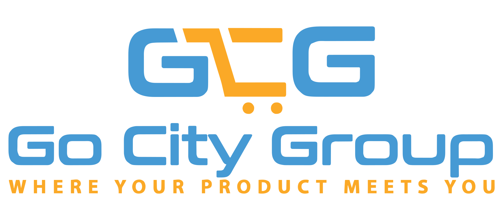

Gsignalx Velocity Trader Manual
Run a commercial prop-safe MT5 desk: structured entries, cash-target harvest (winners only), and Telegram that proves delivery — soft STOP that never flattens your book.
Trader: live DIR, FOLLOW pads, deal + PROP alerts. Investor / monitor: quieter TG (DAILY + PROP), Compact strip, Scouter banking closed P/L with process.
- Profit CASH — stock bank floor +100 account/target currency; one clear number for scalp harvest (how to use).
- Loss CASH — optional cut at −100; arm stays OFF until you turn LOSS ON (no surprise auto-flatten).
- Telegram soft VERIFY — Verified when ≥1 numeric chat receives the probe; dead chats are skipped for sends (recipe).
- Trade Center DeskExecute ON owns fills (FIXED 0.01) · Service stopped or Yield ON · no Chart EA entries on same magic.
- ProfitScouter owns exits · desk PLAY/STOP never closes tickets · set Profit CASH to your book, leave CASH mode ON for scalps.
- EQ OFF unless you want a floating-DD brake · STOP clears pendings · practice packs $20/$50/$100 · press TG VERIFY until green.
All on-chart controls: System UI Best Use · Deploy: docs/RELEASE_v2.14_Input_Reliability.md · Practice: docs/PRACTICE_LIVE_SIM_20_50_100.md
Manage the reason for the trade, not merely the current profit or loss. An open position must continue to earn its right to remain open. These are decision principles — not guarantees of success.
Adaptive chapters: Risk Framework · Market Conditions · Trade Lifecycle · Asset Matrix · Checklists
Executive vs Velocity
🔷 Executive (cloud)
Probability / confluence conviction on the GSignalX platform. Use it to decide what the market wants before you risk size.
🔶 Velocity (this toolkit)
Local MT5 momentum engines + ProfitScouter cash floors. Use it to execute the session and bank closed P/L with process — then get the ping on Telegram.
Runs on your Windows terminal — no cloud order routing in this build. Self-serve City path.
⭐ Velocity Premium (managed)
Hosted & maintained Premium desk for clients — Premium trader manual, install & maintenance on GSignalX Service. Register → Profile → My Services to book.
📈 TradingView publication
Official open-source chart study for the same multi-engine trend logic (PP SuperTrend · ATR SuperTrend · SuperBollingerTrend). Use it as a visual thesis check while Velocity owns the book on MT5.
💬 Trader community
Channel (main this update): macro overview for day trading — consult the composite current driver breakdown and the cited data sources for the quantitative basis. Group remains optional for feedback and peer setups.
🎓 Mentorship
Structured coaching for session discipline and clearer risk habits — educational support for process and market understanding. Does not guarantee profit.
Who this manual is for
| Desk | How to use Velocity | Telegram posture |
|---|---|---|
| Beginner / funded challenge | Service + Scouter Service, Trade Center PropRisk soft locks, FX tab only (1–2 majors START), Event SKIP, hour filter ON, STOP at session end. Size Profit CASH to the book (micro/demo often 5–20; mid-size books use stock 100). Practice packs $20/$50/$100 (Raw preferred for scalp). | Investor-quiet: Dashboard TG · DAILY + PROP · silent overnight · recipe |
| Prop trader (small–medium firm) | Fleet 2–4, FX+CMD on START during London–NY; SUSPEND crypto overnight; Profit CASH ≈ 0.5–1% of balance (stock default 100 for mid-size). CASH mode ON for scalps. Use Trade Center practice coach when sizing a small live/demo book. | Trader-live: Service + Dashboard · EVENT + PROP + deals · VERIFY green · recipe |
| Fund / desk lead / investor monitor | One magic, Service OWN, category capacity ≥4, Confirm gates, grades advisory; Compact strip OK; watch Scouter Profit CASH / Loss arm on the chart panel. | Investor: Dashboard (or Chart failover) · summaries + PROP · VERIFY green (skip warn OK until ChatId2/3 /start) · recipe |
How to navigate
Use the gold tabs in the header or the left rail. Keyboard: ← / → moves sections. Links with hashes (e.g. #deploy) open the right chapter. Print expands all panels.
System map
Two independent engines: GSignalX opens risk; ProfitScouter banks winners at a clear Profit CASH floor. Trade Center and chart buttons never close trades. Bus JSON schema stays v1.
GsignalX_Service (OWN=1) Multisymbol Dashboard (v1.26)
roster scan + fleet fill categories · START/STOP/SUSPEND · events · PROP/TG
│ │ soft STOP (RUN=0) / pair SKIP blocks
▼ ▼
new entries only never closes tickets
│
▼
optional M5 chart EAs (UI/strip; defer entries when Service owns)
│ positions / pendings
▼
┌─────────────┐ advisory ┌─────────────┐
│ ProfitScout │◄──────────────┤ Grader │
│ CASH / lock │ │ ranks only │
└──────┬──────┘ └─────────────┘
│ bank winners at Profit CASH floor
▼
Flat → Service/chart re-entry if RUN + signal still valid
| Component | Opens? | Closes? | Needs chart? |
|---|---|---|---|
GsignalX_Service | Yes (RUN/OWN) | Never | No |
GsignalX_GocityGroup | Yes (PLAY; defer if Service OWN) | No in Scouter mode | Yes |
GsignalX_Multisymbol_Dashboard | No | Never (soft STOP only) | Yes (panel host) |
ProfitScouter_Service | No | Yes (money + adverse) | No |
ProfitScouter_DollarTarget | No | Yes | Yes (panel host) |
ProfitOpportunity_Grader | No | No | No |
ProfitHarvest_Now | No | Yes (one-shot) | Drop on any chart |
Brand names vs MT5 Navigator
| Velocity desk name | What you see in MT5 |
|---|---|
| Multisymbol entry Service | GsignalX_Service |
| Velocity chart entry / strip | GsignalX_GocityGroup (Expert) |
| Prop Firm Trade Center | GsignalX_Multisymbol_Dashboard |
| Profit scouting (chart) | ProfitScouter_DollarTarget |
| Profit scouting (24/7) | ProfitScouter_Service |
| Opportunity ranks | ProfitOpportunity_Grader |
| Manual bank-it-now | ProfitHarvest_Now |
Non-negotiable behaviours
- STOP pauses new entries and cancels pendings — leaves open tickets for Scouter.
- HALT pauses entries and the linked Scouter — still does not close tickets.
- FOLLOW (default): keep filling latest signal direction; Scouter owns exits.
- WAIT: block new-direction entries while opposite magic exposure remains.
- SPREAD (default): enforce
InpMaxSpreadPton entries. - IGN: bypass the entry spread gate on that chart only (worse fills allowed; Scouter exits unchanged).
- FIXED (default 0.01): always use fixed lot. Press AUTOLOT only for intentional risk% sizing.
- AUTOLOT: size from balance × risk% ÷ ATR stop distance (fail-safe → fixed lot; Experts may log AUTO→FIX).
- EQ OFF / 5% / 10% / 20%: Account floating DD guide — OFF shows live DD only; 5/10/20 soft-block new entries at threshold. Prop peak DD is separate (Trade Info).
- PROP CLEAR: unlock Prop soft-STOP + equity grace (desk never flattens).
- REKICK: re-open drill when DIR live but drill closed.
- Compact panel (default input): investor outcome strip; Full adds engine rows + entry detail (
InpPanelDensity). - Profit path closes winners only (minimal set, biggest green first). Losers exit via adverse-bar Auto, opt-in Loss CASH, manual CUT/FLAT, or catastrophe SL — not via Profit CASH floors.
- One Scouter instance for “All symbols” — two harvest engines on the same book race.
- Trade Center / PropRisk soft STOP never closes tickets; only Scouter (or Harvest script) may close.
- Service OWN and chart entries must not double-fill the same magic.
- Position size ≠ risk per trade ≠ margin used ≠ maximum possible loss.
- FIXED 0.01 is the production default; AUTOLOT sizes from balance × risk% ÷ sizing ATR — high leverage does not raise acceptable risk.
- StrategicStop (default 4×ATR) is a catastrophe broker SL; lot sizing uses a tighter signal ATR distance. Do not widen StrategicStopMult to “give room.”
- Verify tick value, contract size, and min lot from the current instrument specification.
- One Scouter closer per Instance ID; stale bus / VPS / terminal failure ≠ strategy failure.
- Symbol suffix mismatch and wrong contract specs cause bad lots — use SymbolCanon-aware hosts.
- Trade Center tip row and Telegram OPEN now carry context tips from
RiskGuidance.mqh(advisory only).
Profit CASH & Loss CASH — best use
One cash number the desk can teach, set, and trust. Stock Scouter default: Profit CASH +100 (account or target currency). Micro/demo books still ladder smaller floors — see Fund Growth.
What you get
Profit CASH banks winners when floating P/L hits your floor (biggest greens first; losers stay). CASH mode collapses account + pair + position hard targets to that single floor — ideal for scalps.
What stays safe
Loss CASH defaults OFF. Amount stock −100, but nothing auto-cuts losers until you arm LOSS ON. Adverse AUTO and manual CUT remain available without it.
Three steps (scalp desk)
- Set
InpAccTargetMoney(Profit CASH) and alignInpMinWinProfit/ lock arm to the same floor. - Leave chart mode CASH ON (single floor). Use LAYER only when you intentionally want trail / window / partial %.
- Press START. Watch panel lines
Profit CASH +NandLoss CASH −N · OFF|ARMED.
Scouter chart buttons
| Button | What it does | Best use |
|---|---|---|
| START / STOP | Arm or pause harvest closes | STOP = watch P/L only; tickets stay open |
| AUTO | Adverse-bar loser exit on/off | Keep ON for M5 desk with signal + age gates |
| TRAIL | Independent ATR/% candle auto-trail on winners | ON for multi-pair books that need give-back protection between Profit CASH floors |
| BANK / CUT / FLAT | Manual confirm closes | BANK winners · CUT losers · FLAT all — always operator OK |
| CASH / LAYER | Toggle single cash floor vs layered rules | Scalps → CASH; trail/window books → LAYER |
| LOSS ON / OFF | Arm opt-in account Loss CASH cut | OFF by default; arm only when you want −N auto cut |
Persists: PS{id}_RUN, _ADVEN, _CASH, _LOSS, _TRAIL. Service with the same Instance ID honors chart toggles when InpRespectChartRunState=true.
ATR / Percent TRAIL — best use Scouter 2.02
Independent winner protection. Does not replace Profit CASH floors, adverse AUTO, or Loss CASH. Manual BANK / CUT / FLAT always work.
What it does
When TRAIL ON, Scouter closes green tickets after peak give-back using Hybrid distance: max of ATR×mult (plus last-N candle range floor) and % of peak money. Tag: ATR-TRAIL.
How to arm
Chart button TRAIL writes PS{id}_TRAIL. Keep START on (master kill for all auto closes). Service honors the same GV when InpRespectChartRunState=true.
Best case (prop / multi-pair)
M5 desk · Profit CASH set for hard bank · TRAIL ON · optimizer ON · AUTO ON for losers · Loss CASH OFF unless you want −N flatten. Use TRAIL when winners pull back before the cash floor.
Key inputs
| Input | Stock / tip |
|---|---|
InpAtrTrailMode | Hybrid (ATR + % of peak) |
InpAtrTrailMult / min–max | 1.5 base; optimizer nudges 0.8–2.5 per pair |
InpAtrTrailPct | 30% of peak give-back |
InpAtrTrailCandles | 3 — avg range of last closed bars as distance floor |
InpAtrTrailArmMoney | 0 = arm at MinWin / Profit CASH floor |
InpAtrTrailOptimize | ON — per-canon EMA adjusts effective mult |
InpAdverseMinBodyPts / InpAdverseMinRangePts default 0 — AUTO streak behaviour unchanged. Set >0 only when opposing bars must have meaningful size before loser cuts.
InpAccLossGuardEnable / InpAccMaxLossMoney) are gone. Prefer opt-in Loss CASH (Scouter), chart EQ for floating equity DD on new entries, and prop daily loss as trader discipline (HALT / STOP / position count) — not a legacy flatten-all API.
Windows deploy (easy path)
You do not need to be a programmer. Download the toolkit, double-click one installer script, then turn a few switches on inside MetaTrader 5.
docs/WINDOWS_DEPLOY_SIMPLE.md
(same folder as this manual on GitHub / after clone). Technical depth stays in DEPLOYMENT.md.
Prerequisites
- Windows 10/11
- MetaTrader 5 installed and opened at least once (creates the Data Folder)
- Demo account first
- Git optional — ZIP download is enough
Step 1 — Get the toolkit
Repository: gocitygroup/GsignalX-Velocity
A) Download ZIP (easiest)
Recommended- GitHub → green Code → Download ZIP (or main.zip)
- Unzip to a simple path, e.g.
C:\GSignalX\GsignalX-Velocity - Open folders until you see both a
deployfolder and many.mq5files — that folder is the toolkit root
B) Git (optional):
git clone https://github.com/gocitygroup/GsignalX-Velocity.git cd GsignalX-Velocity
Step 2 — Install into MT5 (one double-click)
Fastest
No coding- Open the toolkit’s
deployfolder in File Explorer - First install: double-click
Click-and-Run-Deploy.bat - Upgrade: double-click
Clean-and-Deploy.batinstead - If Windows SmartScreen appears → More info → Run anyway
- Wait until the black window finishes — healthy lines say
Result: 0 errors, 0 warnings
PowerShell alternative (advanced):
powershell -ExecutionPolicy Bypass -File .\deploy\Deploy-GSignalX.ps1 -AllTerminals -Compile
Step 3 — Turn it on in MetaTrader 5
The installer cannot press these buttons for you:
- Toolbar Algo Trading = green / ON
- Tools → Options → Expert Advisors → allow algorithmic trading
- Navigator → Services → start
GsignalX_Service - Start
ProfitScouter_Service(this one closes winners) - Start
ProfitOpportunity_Grader - Attach
GsignalX_Multisymbol_Dashboard(same magic as Service) - Optional: attach
GsignalX_GocityGroupon M5 for the chart strip - Double-click
deploy\Confirm-After-Start.bat
Telegram later: allow WebRequest URL https://api.telegram.org in Expert Advisors options.
Step 4 — What landed where
| Source in repo | MT5 Data Folder destination |
|---|---|
Include/GSignalX/*.mqh | MQL5\Include\GSignalX\ |
Include/ProfitScouter/*.mqh | MQL5\Include\ProfitScouter\ |
GsignalX_GocityGroup.mq5 | MQL5\Experts\ |
GsignalX_Multisymbol_Dashboard.mq5 | MQL5\Experts\ |
GsignalX_Service.mq5 | MQL5\Services\ |
ProfitScouter_DollarTarget.mq5 | MQL5\Experts\ |
ProfitScouter_Service.mq5 | MQL5\Services\ |
ProfitOpportunity_Grader.mq5 | MQL5\Services\ |
ProfitHarvest_Now.mq5 | MQL5\Scripts\ |
Data folder: MT5 → File → Open Data Folder → typically %APPDATA%\MetaQuotes\Terminal\<HASH>\.
.set preset, stop and restart the Service from Navigator. Chart EAs: remove and re-attach (or Reset inputs) if the panel still shows stale floors.
Problems and fixes (most common)
| What you see | What to do |
|---|---|
No deploy folder after ZIP | Open the nested inner folder until deploy + .mq5 appear |
| No MT5 terminal folders found | Open MT5 once under the same Windows user, then re-run the .bat |
| MetaEditor not found | Search Start for MetaEditor64.exe; set METAEDITOR=... near the top of the .bat |
| Compile errors (not 0/0) | Run Clean-and-Deploy.bat; read the .log next to the program in the Data Folder |
| Expert/Service missing in Navigator | Re-deploy → Navigator → Refresh |
| Smiley with X / no trading | Algo Trading ON + Common tab allow trading |
| Positions never close | Start one ProfitScouter_Service (or DollarTarget START) |
| Telegram WebRequest error | Allow https://api.telegram.org in Expert Advisors options |
| Confirm WARN stale bus | Start Services; wait ~60s; run Confirm-After-Start again |
| Want a human? | Share a redacted CONFIRM_*.md summary in the trading group — no tokens, login, or account numbers |
Longer table: docs/WINDOWS_DEPLOY_SIMPLE.md · Gates: DEPLOYMENT_RUNBOOK.md · Sign-off: docs/RELEASE_v2.14_Input_Reliability.md.
Host this manual on GitHub Pages
- Repo Settings → Pages → Source: Deploy from a branch
- Branch:
main(or your default) · Folder:/docs - Save — site URL serves
docs/index.html→ this manual docs/.nojekyllis included so Pages serves files as-is
Offline: open docs\Gsignalx_Velocity_Users_Manual.html in any browser after clone — no build step.
Grow the fund from €10 / $10
Profit CASH floors and fleet size must scale with balance. Stock Scouter default is now +100 for mid-size books — micro accounts and practice presets still use the ladder below (or load matching .set files).
Ladders below are worked examples for risk geometry — not performance forecasts. At micro balances, broker min lot dominates percent-risk math. Prefer FIXED 0.01 in production until you intentionally enable AUTOLOT. Verify spreads, commission, and leverage from your broker.
Growth ladder (sample)
| Balance | Profit CASH / lock arm | MinWin | Fleet pairs | MaxLot | Charts |
|---|---|---|---|---|---|
| €10–50 | 0.20–0.50 | 0.10–0.25 | 1 | 0.01 | 1 major M5 · paper preferred until margin comfortable |
| €100 | 1.00 | 0.50 | 2 | 0.10 | EURUSD + GBPUSD M5 · load 100EUR presets |
| €250 | 2.50 | 1.00 | 3 | 0.25 | + AUDUSD or USDJPY M5 |
| €500 | 5–10 (practice) | floor ÷ 2 | 4 | 0.50 | XAUUSD becomes viable at 0.01 |
| €1,000+ / mid-size | 100 stock or ≈0.5–1% balance | match floor | 4 | risk-sized + hard cap | Full Velocity roster ≤ 4 concurrent |
€100 raw-spread sample (production preset)
Load from Inputs → Load (overrides stock 100 when you need a micro floor):
deploy/presets/GSignalX_100EUR_RawSpread.setdeploy/presets/ProfitScouter_100EUR_RawSpread.set
| Knob | Stock Scouter | EUR 100 preset | Why |
|---|---|---|---|
InpAccTargetMoney (Profit CASH) | 100.0 | 1.0 | ≈1% harvest on €100; stock 100 suits mid-size books |
InpMinWinProfit | 100.0 | 0.50 | Dust winners can jointly bank the floor |
InpFleetTargetPairs | 4 | 2 | Cap correlated loser wave |
InpUseHourFilter | false | true 7–20 | Skip rollover |
InpAdverseTimeframe | M15 Service / chart CURRENT | M5 | Faster loser cut on M5 desk |
InpMaxLot | 5.0 | 0.10 | Hard sanity |
InpIncludeCommission and InpIncludeSwap true on raw accounts so Profit CASH floors are net. Percent-of-balance on the account layer only lowers the floor when combined with a fixed target — ladder fixed money manually.
Practice live packs — $20 / $50 / $100 (Standard + Raw)
Canonical risk geometry for micro books (also in PracticeSim.mqh). Trade Center buttons 20 · 50 · 100 · RAW · STD · SCALP · DAY · SWING show coach tips. Soft-apply updates fleet + category only — money floors stay in .set files. Load matching Service + Scouter presets, then restart Services.
| Band | Day loss halt | Day profit bank | Fleet | Max lot | Day max trades |
|---|---|---|---|---|---|
| 20 | 1.00 (5%) | 0.40 (2%) | 1 | 0.01 | 2 |
| 50 | 2.00 (4%) | 1.00 (2%) | 2 | 0.02 | 3 |
| 100 | 3.50 (~3.5%) | 1.50 (1.5%) | 2 | 0.10 | 4 |
ASAP / lock / minWin (Raw): 0.20/0.20/0.10 · 0.50/0.50/0.25 · 1.00/1.00/0.50. Standard uses higher floors. Style trade caps (coach): Scalp 4/6/8 · Day 2/3/4 · Swing 1/1/2. These are discipline rules, not forecasts — demo first.
Preset files: deploy/presets/GSignalX_Service_Practice_{BAND}_{Raw|Standard}.set + matching ProfitScouter practice presets. Expectancy / Kelly proxy detail: docs/PRACTICE_LIVE_SIM_20_50_100.md (pointer — canonical tables live here). Demo first; no virtual balance.
Trading session timing
All hours are broker server time — not your local timezone unless they coincide. Prop desks standardise on one session window and STOP outside it.
Controls
| Input | Default | Effect |
|---|---|---|
InpUseSessions | true | Obey broker market session calendar |
InpUseHourFilter | false | Hard gate when ON |
InpStartHour / InpEndHour | 7 / 20 | Used when hour filter ON |
InpFridayStop / hour | true / 20 | No new FX late Friday |
InpBlockWeekend | true | No Sat/Sun FX |
InpCloseBeforeWE | false | Optional Friday flatten |
InpStaleTickSec | 180 | Treat market closed if no tick |
InpSwingStartHour / End | 12 / 17 | Grade boost only — does not block entries |
InpCryptoAllowWeekend | true | Crypto skips FX weekend / Friday flat |
Beginner daily session recipe
London–NY overlap desk
Prop-safe- Confirm broker server offset vs London (often GMT+2/+3).
- Set
InpUseHourFilter = true, exampleStart=8End=17(or 7–20 stock band). - Press PLAY only when you are watching the session.
- Press STOP at session end — Scouter may still bank open winners if not HALTed.
- Keep Friday stop ON for FX. No revenge PLAY after news spikes.
Sample session clock (illustrative)
Trade Center draws an illustrative GMT strip (Asia · London · NY · Sydney). It does not replace broker session gates above — use it as a desk awareness aid only.
| Server hour | Desk action |
|---|---|
| 07:00–08:00 | Pre-flight: spreads, Algo ON, Scouter START, floors check |
| 08:00–12:00 | PLAY core pairs; drill windows; bank Profit CASH cycles |
| 12:00–17:00 | Swing band — grades richer; optional add pair if fleet room |
| 17:00–20:00 | Reduce roster; widen spread filter awareness |
| ≥20:00 Friday | No new FX; STOP / optional flatten |
Beginner automated day
Run this once on demo until the loop feels boring. Boring is the goal. Use the preliminary M5 desk (GSignalX on M5 + Scouter adverse M5).
Sample demo day — size the floor to the book
Scaled CASHInputs snapshot: Bracket Both 5+5 pips · Drill 10 min · Profit CASH sized to demo (micro often InpAccTargetMoney=5–20; mid-size books use stock 100) · Fleet 2 · Hour filter 8–17 · Instance ID 1 · Adverse TF M5 · Loss CASH OFF
- Start ProfitScouter_Service (CASH mode seeded ON; START state respected; set
InpAdverseTimeframe=M5). - Start ProfitOpportunity_Grader.
- Attach GSignalX on EURUSD M5 and GBPUSD M5 (preliminary chart); Algo Trading allowed.
- At session open → PLAY on each chart. Watch drill countdown.
- Confirm Working pendings or Position; Status RUNNING.
- When combined floating P/L ≥ your Profit CASH floor → Scouter banks winners only; losers stay.
- If PLAY still on and signal agrees → march-after-flat may re-open.
- Session end → STOP every chart. Leave Friday rules ON.
You just ran: signal → entry → scout → harvest → optional re-entry. Commercial stock default is +100; practice/micro books keep smaller floors via presets — see Fund Growth.
Optional chart companion: follow the same engines on TradingView while you watch the MT5 panel — study only; Velocity places the tickets.
First settings that matter
| Area | Suggested first setting |
|---|---|
| Entry | Limit+Stop bracket, offsets 5 (scalp 4–6; clamp 4–20) |
| Drill | Enabled, 10 minutes |
| Exit mode | GSX_EXIT_SCOUTER (default) |
| Strategic SL | ON · 4.0×ATR · TP open |
| ProfitScouter | CASH mode · floor sized to account (stock 100; micro 5–20) · Loss CASH OFF · commission/swap ON |
| Scope | All symbols · one Service instance |
| Flip policy | FOLLOW |
Manual tools without full automation
- Read panel bias / Last signal; place your own tickets; keep Scouter for banking.
- Drag
ProfitHarvest_Nowfor a one-shot bank (default account target 10; Confirm ON). - Use HALT when walking away mid-book without wanting harvest to continue.
A signal (local DIR or Executive cloud) is not an automatic order. Confirm market condition, spread, fleet room, and invalidation before you click. See Risk Checklists.
Advanced desk
Change these only when you can state the risk effect in one sentence.
Engine agreement
| Mode | Behaviour |
|---|---|
Simple (GSX_SIMPLE) | Any enabled trigger may fire |
| Advanced | Need InpMinAgree (default 2) among PP / ST / SBT |
Stock often enables PP + SuperBollingerTrend; ATR SuperTrend optional. Optional: align bias with the TradingView publication before PLAY — chart study only; Velocity still owns fills.
FOLLOW vs WAIT
- FOLLOW — leave opens for Scouter; keep filling latest direction on free charts / fleet slots.
- WAIT — no new-direction entries while opposite-direction magic exposure remains. Prefer WAIT on news days or when book is mixed.
SPREAD vs IGN (entry spread gate)
Entries must pass InpMaxSpreadPt (default 40 points) unless you unlock that chart with IGN. Toggle is per chart, persists across restart, and is entry-only. Panel Spread row shows IGN when unlocked; turning IGN on while PLAY re-arms evaluation so a chart stuck on waiting: spread can fill now.
| Mode | When to use |
|---|---|
| SPREAD (default) | Liquid FX in-session; skip news / rollover / thin-liquidity spikes. |
| IGN | Panel blocked on spread but signal/drill still valid and you accept a worse fill; crypto (or 24/7) symbols with routinely wide-but-tradeable point spreads; short deliberate unlock — then return to SPREAD. |
InpMaxSpreadPt on crypto charts for wide-but-normal spreads. Reserve IGN for one-shot unlocks — not a permanent substitute for the limit. Avoid IGN on FX news/rollover and on micro accounts where spread + commission erase scalp edge.
Preliminary chart (M5)
M5 is the preliminary (primary) desk timeframe for best paired performance of Velocity entries and ProfitScouter exits.
| Engine | Why M5 |
|---|---|
| GSignalX | Signal flips and the 5–15 min drill align with M5 bar pace; pending age and fleet refill stay meaningful in-session. |
| ProfitScouter | Adverse Auto after ≥3 closed bars ≈ 15 min on M5 (vs ≈ 45 min on M15); 4×ATR catastrophe costs less account %. |
| Together | Bus signal TF matches adverse TF → cleaner loser cuts; ASAP cycles turn faster on liquid majors. |
- Attach every GSignalX roster chart on M5.
- Set Service
InpAdverseTimeframe = M5(stock Service default is M15 — change it for this desk). - Host DollarTarget on an M5 chart when using
PERIOD_CURRENT. - Do not mix M15 signal charts with M5 adverse (or the reverse) unless you intentionally accept mismatched exit speed.
Fleet fill
InpFleetTargetPairs (default 4) counts a pair complete when it has an open position or working pending. Fill stops at coverage. Cooldown InpFleetFillCooldownSec default 10. Unfilled pendings age out (InpPendMaxAgeMin, stock 240; EUR100 preset 60 on M5).
Adverse-bar Auto (loser path)
- BUY + ≥3 selling closed bars (or SELL + buying) → close same-symbol losers only.
- Only profit-engine path with
allowLoss. Toggle with chart AUTO. - Match TF to charts (M5 desk → M5 adverse TF).
InpAdverseRequireSignaltrue (default) — needs conflicting bus direction.
Profit lock
Arm when peak ≥ InpProfitLockArm; close on give-back to max(50% of peak, MinWinProfit). Align arm with ASAP floor on micro accounts.
Multi-terminal bus
Common Files: %APPDATA%\MetaQuotes\Terminal\Common\Files\GSignalX\bus\v1\
- GSignalX →
signals/{symbol}.json+ heartbeat - Scouter →
scouter/snapshot.json - Grader →
grades/latest.json(advisory — never executes)
Multisymbol Service + Trade Center
Session roster recipe (FX START, Event SKIP, practice coach). How to run the live desk: System UI Best Use (2.14) · docs/RELEASE_v2.14_Input_Reliability.md.
Best use case (prop / small fund)
.set pair, then use Trade Center 20 · 50 · 100 · RAW · STD · SCALP · DAY · SWING for pairs/session tips (soft fleet/cat only; money knobs stay in presets).
- Seed multi-class list (4 FX + metals/oils + crypto). Service + Dashboard + Scouter share one
InpMagic. Micro practice: seed the preset symbol list (often EURUSD or EURUSD+GBPUSD only). - FX tab — START only the 2–4 pairs you will trade this session (e.g. EURUSD, GBPUSD, USDJPY, XAUUSD on CMD). STOP the rest; SUSPEND crypto overnight. At $20–$50 keep CMD/CRYPTO SUSPEND.
- Fleet target = 4 (or 2 on funded challenge / $100 practice; 1 on $20). M5 Service; Scouter adverse TF = M5; Profit CASH ≈ 0.5–1% balance (stock 100 for mid-size; practice packs scale floors — see playbook).
- Events = SKIP while calendar is enabled; Telegram
[EVENT]on. Flip to TRADE only when the desk is watching and will hold through the print. - Session clock is awareness only — still use broker hour filter / Friday stop for hard gates. PLAY into London–NY (scalp: LDN·NY overlap; swing: grade band 12–17); fleet STOP at your cut-off (Scouter keeps managing open risk).
- Practice coach — after loading the matching Raw/Standard
.set, restart Services; panel buttons refresh coach + tip lines (expectancy / loss budget / secondary pairs). Do not expect buttons to hot-load Prop money inputs. - Never use Dashboard to flatten. PROP / HALT / pair STOP only pause new entries.
| Mode | Roster posture | Events | When |
|---|---|---|---|
| Practice $20/$50 | FX only, 1–2 START · CR/CMD SUSPEND | SKIP | Demo micro; Raw preferred for scalp |
| Challenge / risk-off | FX only, 1–2 START | SKIP | Eval / funded daily loss tight |
| Standard prop desk | FX+CMD START overlap; CR SUSPEND | SKIP | Default London–NY session |
| Event scalp desk | Relevant FX START | TRADE + watch | Only with eyes on chart + TG |
Production attach order
- Deploy / compile (
Clean-and-Deploy.batorDeploy-GSignalX.ps1 -Compile). - Algo Trading ON. Allow WebRequest
https://api.telegram.orgif Telegram is enabled. - Start GsignalX_Service, ProfitScouter_Service, ProfitOpportunity_Grader.
- Attach GsignalX_Multisymbol_Dashboard with seed list + shared magic.
- Optional: M5 chart GSignalX with
InpChartEntriesWhenService=falsefor strip/UI. - Run
Confirm-After-Start.bat— expect Trade Center / Service version 2.14 + bus schema 1.
Multisymbol Service
- Chart-free roster scan + fleet fill; publishes live roster CSV under
GSignalX/bus/v1/roster/{magic}.csv. - Sets
GSX_SVC_OWN_{magic}=1so chart EAs defer fleet/auto-entries. - Never reverse-closes — Scouter owns exits.
- Hot-reloads roster when Dashboard ADD/REMOVE advances
GSX_SVC_ROSTER_SEQ_{magic}.
System UI (all surfaces)
Four on-chart UIs. Full maps: System UI Best Use.
- Trade Center — cats/fleet/carousel · PLAY/STOP/HALT · FIXED/EQ · REKICK · FollowDir · START/STOP ALL · PROP · practice · VERIFY · per-row MODE/STATE/REM
- Chart Signal panel — PLAY/STOP/HALT · flip FOLLOW|WAIT · FollowDir (this symbol) · SPREAD|IGN · FIXED|AUTOLOT · EQ cycle
- Chart roster strip — carousel ADD/SWAP/REM · page (buttons or mouse wheel) · per-row STATE/X
- ProfitScouter — START/STOP/AUTO · BANK / CUT / FLAT (only UI that closes tickets)
Default lot is FIXED 0.01. Desk/Chart soft STOP never closes — Scouter BANK/CUT/FLAT (or manual) does. Service hosts have no chart buttons.
Telegram notifier
WebRequest Telegram alerts (deals, PROP, EVENT, summaries, engine WARN). Status NotCfg / Connected / Verified / Error; Trade Center VERIFY button. Full trader vs investor recipes: Telegram Alerts.
PropRisk soft locks
Challenge pack trips sticky STOP (entries paused via RUN=0). Positions stay open for Scouter. Resume with PLAY after the rule condition clears or you intentionally override per firm policy.
| Gate | Typical use |
|---|---|
| Daily loss $ / % | Challenge daily max loss |
| Equity drawdown % | Prop peak equity DD (default OFF; set 5–10 for challenge packs). Distinct from Account EQ guide pads. |
| Max trades / day | Overtrading brake |
| Consistency share | Cap one-day P/L share of target |
| Daily profit target | Stop hunting after target |
| Friday hour / news CSV | Blackout windows |
System UI Best Use
Every on-chart control: Trade Center, Chart Signal panel, Chart roster strip, ProfitScouter. Bus schema v1. Operator note: docs/RELEASE_v2.14_Input_Reliability.md.
UI surfaces
| Surface | Host | Prefix |
|---|---|---|
| Trade Center | GsignalX_Multisymbol_Dashboard | GSXMS_ |
| Chart Signal panel | GsignalX_GocityGroup (InpShowButtons) | GSX_ |
| Chart roster strip | Same Chart EA (InpShowRosterStrip) | GSXMS_ |
| ProfitScouter | ProfitScouter_DollarTarget | PSBTN_ |
| GSignalX / Scouter Service | Chart-free | — (no buttons) |
Topology A vs B
| Mode | DeskExecute | Service | Result |
|---|---|---|---|
| A (preferred) | ON | Stopped | Trade Center owns fills |
| B (headless) | OFF / detached | Running | Service owns fills |
| Both | ON | Yield ON | Service idles after Desk OWN + desk heartbeat |
Cross-surface rules
- STOP vs HALT (Desk + Chart): STOP = entries off, linked Scouter may keep harvesting; HALT = entries off and Scouter RUN off. Neither closes tickets.
- Scouter START/STOP arms harvest only — not the same as desk PLAY/STOP.
- BANK / CUT / FLAT on ProfitScouter are the only on-chart flatten controls.
- FOLLOW on the run strip = flip-wait. FOLLOW · BUY · SELL · WAIT = FollowDir gate (different control).
- Chart EQ cycles OFF→5→10→20. Trade Center EQ uses four discrete pads.
1 — Trade Center
A · Telegram / categories / fleet / carousel
| Control | What it does |
|---|---|
| VERIFY | Telegram soft health: getMe + plain [TG] verify per chat → Verified if ≥1 chat delivers (dead chats skipped) |
| ALL / FX / CMD / CRYPTO | Category filter for the roster view |
| − / + (fleet) | Decrease / increase fleet target |
| < / > (page) | Roster page (mouse wheel over the panel also pages) |
| < / > (carousel) | Carousel candidate |
| ADD | Onboard carousel candidate (does not force PLAY if STOPPED) |
| SWAP | Swap carousel candidate into the view |
| REM | Remove carousel pair if on roster + cancel its pendings |
B · Run strip
| Control | What it does |
|---|---|
| PLAY | Allow fleet entries; arm drill; linked Scouter on — does not clear Prop (use PROP CLEAR) |
| STOP | Cancel roster pendings + pause entries; Scouter keeps running; no closes |
| HALT | STOP + linked Scouter off; still no closes |
| FOLLOW / WAIT | Toggle flip-wait only (not FollowDir) |
| SPREAD / IGN | Enforce vs ignore desk max-spread on new entries |
C · Lot / EQ
| Control | What it does |
|---|---|
| FIXED / AUTOLOT | Default FIXED 0.01; AUTOLOT = risk% (survives reattach) |
| EQ OFF · 5% · 10% · 20% | Account floating-DD entry guide. OFF = show live DD only |
D · Status chips + REKICK
| Control | What it does |
|---|---|
| RUN / FOL / EVT / FIX chips | Labels only — not clickable |
| REKICK | Re-open drill; requires PLAY (else status: REKICK needs PLAY) |
E · FollowDir (desk-wide)
| Control | What it does |
|---|---|
| FOLLOW · BUY · SELL · WAIT | Set FollowDir for all roster pairs |
F · Bulk pairs / Prop / Events / Practice
| Control | What it does |
|---|---|
| START ALL / STOP ALL | Arm or soft-stop pairs in the current category view (STOP ALL cancels their pendings) |
| PROP CLEAR / PROP OK | CLEAR unlocks Prop soft-STOP + equity grace and arms PLAY; OK = unlocked |
| EVT | Toggle event mode TRADE/SKIP |
| 20 / 50 / 100 · RAW/STD · SCALP/DAY/SWING | Practice coach band / cost / style (soft fleet/cat tips) |
| Trade Info | Account DD vs Prop peak DD · session W/L/net (read-only) |
G · Per-row (paged roster)
| Control | What it does |
|---|---|
| MODE (FollowDir chip) | Cycle FollowDir for that row only |
| START / STOP / SUSPEND | Cycle pair state; START re-arms onboard+PLAY+drill; STOP/SUSPEND cancel that symbol’s pendings |
| X (REM) | Remove that row’s symbol + cancel pendings |
2 — Chart Signal panel
| Control | What it does |
|---|---|
| PLAY | Entries on + linked Scouter RUN on |
| STOP | Entries off; Scouter keeps harvesting |
| HALT | Entries off + Scouter RUN off; no closes |
| FOLLOW / WAIT | Flip-wait toggle (this chart) |
| FOLLOW · BUY · SELL · WAIT | FollowDir for this symbol only |
| SPREAD / IGN | Per-chart spread ignore |
| FIXED / AUTOLOT | Per-chart lot mode |
| EQ OFF / EQ n% | Cycles OFF → 5% → 10% → 20% → OFF |
Title bar is drag-only. Status rows (STOPPED/RUNNING, Scout, Spread, …) are labels.
3 — Chart roster strip
| Control | What it does |
|---|---|
| < / > carousel | Step candidate |
| ADD / SWAP / REM | Same roster hygiene as Trade Center carousel |
| < / > page | Roster page (mouse wheel over the strip also pages) |
| STATE / X | Per-row state cycle / remove |
No PLAY / EQ / PROP / practice on the strip — use Trade Center or Chart panel.
4 — ProfitScouter
| Control | What it does |
|---|---|
| START (dense: GO) | Scout harvest ON (PS{id}_RUN) |
| STOP | Scout harvest OFF — panel still updates; no closes until START |
| AUTO ON/OFF | Adverse-bar auto (PS{id}_ADVEN) |
| BANK + | Confirm → close winners only |
| CUT − | Confirm → close losers only |
| FLAT | Confirm → close all in scope |
Desk/Chart PLAY/HALT write the same PS{id}_RUN when scout-link is enabled. Service Scouter has no buttons (can respect those GVs).
EQ vs Prop peak DD
- Account DD (EQ pads / chart EQ cycle) — floating drawdown guide. EQ OFF shows live DD but does not block entries.
- Prop peak DD — challenge math from peak equity; independent of Account DD. Leave
InpPropMaxEquityDdPctat 0 unless you are on a challenge pack (then 5–10). - PROP CLEAR unlocks soft-STOP, arms equity grace, and arms PLAY. Desk PLAY alone does not clear Prop.
Do / Don’t
| Do | Don’t |
|---|---|
| Topology A for interactive Trade Center | Leave Chart EA filling the same magic as Desk |
| REM unused pairs after upgrade; STOP once to clear brackets | Expect soft STOP alone to kill old pendings |
| Set Prop max equity DD only for challenge accounts | Leave AUTOLOT on by accident |
| Use Scouter BANK/CUT/FLAT (or manual) to flatten | Expect desk/chart PLAY/STOP/HALT to close tickets |
| REKICK only while PLAY is on | Confuse run-strip FOLLOW with FollowDir FOLLOW |
Upgrade after deploy
- Compile all terminals; reattach Trade Center; restart Service if used.
- Confirm Automation shows FIXED and lot 0.01.
- Press STOP once, then REM pairs you do not want.
- PLAY / START only the live book. Use PROP CLEAR if an old equity rule left LOCK.
Session roster recipe remains in Multisymbol Desk. Confirm: Confirm-GSignalX.ps1 -Gate All — expect V2.14 markers.
Telegram alerts for traders and investors
Know fills, PROP locks, and desk health without watching MT5. Commercial desk alerts are plain-text WebRequest (Market compliant, no DLLs) — and VERIFY proves delivery, not just a valid bot token.
What you get
| Capability | Detail |
|---|---|
| Deal alerts | [OPEN] / [CLOSE] / [MODIFY] with entry, SL, TP, and P/L |
| Summaries | [DAILY] / [WEEKLY] with win rate, drawdown, balance |
| Lifecycle | [START] / [STOP] — EA online / offline + session P/L |
| Risk & news | [PROP] soft lock · [EVENT] calendar/desk ahead · [WARN] / [ERROR] |
| Delivery | Up to 3 numeric chat IDs · queue 10 · 3 retries · rate 20/min · silent hours GMT · plain-text alerts |
| Health | Soft VERIFY: getMe + plain [TG] verify per chat · Verified if ≥1 chat delivers · dead chats skipped for sends (strip may show skip …) |
Where it runs
| Host | Sends | Best for |
|---|---|---|
| Trade Center (Dashboard) | OPEN/CLOSE/MODIFY, PROP, EVENT, DAILY/WEEKLY, desk START/STOP | Primary desk — keep attached while trading |
| GsignalX_Service | svc START/STOP, WARN (fill fail / empty roster / OWN lost), ERROR | Trader reliability when Dashboard is closed |
| Chart EA | chart START/STOP; deals only if desk heartbeat is stale (failover) | Single-chart attach or investor monitor |
One bot token can be shared. Desk owns deal alerts while its heartbeat is fresh — Chart does not duplicate CLOSE. Service never sends OPEN/CLOSE.
Setup (5 steps)
- Create a bot with BotFather; copy the token (never commit tokens; rotate if shared outside MT5).
- Each recipient opens the bot and sends
/start; copy up to 3 numeric chat IDs (never@username). Leave unused slots empty. - In MT5: Tools → Options → Expert Advisors → allow WebRequest URL
https://api.telegram.org. - Enable Telegram inputs on the host(s) you need (Dashboard and/or Service and/or Chart).
- On Trade Center press VERIFY until status shows Verified. You should get
[TG] verifyon working chats. If the strip showsskip chat …, that ID is dead until/start— alerts still go to healthy chats.
Trader best use (active prop desk)
London–NY live book
Full alerts- Enable TG on Service + Dashboard (same token/chats).
- Expect OPEN/CLOSE/MODIFY, PROP, EVENT, and Service WARN in the chat.
- Keep Event mode SKIP with
[EVENT]ahead; flip to TRADE only when you are watching the print. - Silent hours: off or narrow during the session; widen overnight if you sleep. Equal start/end hour = silent off.
- Press VERIFY after every token change, VPS move, or WebRequest allowlist edit. Green + optional
skipwarn is OK until ChatId2/3 complete/start. - Micro / practice book: pick band + Raw/Std on Trade Center after loading the matching presets; Scalp → LDN·NY; Day → 07–20; Swing → M15 grades 12–17.
Investor best use (monitor / Compact)
Quiet oversight
Summaries first- Enable TG on Dashboard only — or Chart alone for a single-symbol book.
- Lean on
[DAILY]/[WEEKLY],[PROP], and[START]/[STOP]. Leave Service TG off unless you are debugging fills. - Set silent hours for overnight GMT; keep default rate 20/min; one personal numeric chat ID is enough.
- Watch Compact roster strip
TG Verified— you do not need Full engine panels. Ignoreskip …until secondary recipients are onboarded. - If Trade Center is closed, Chart failover can still report closes — attach Chart TG only when you want that backup.
What each tag means
| Tag | Meaning | What to do |
|---|---|---|
[OPEN] / [MODIFY] / [CLOSE] | New or changed risk; close includes P/L | Confirm size and SL/TP match plan |
[PROP] | Challenge soft STOP — no new entries | Do not revenge PLAY; Scouter still owns exits |
[EVENT] | Upcoming news relevant to START pairs | Confirm SKIP vs TRADE; watch the print if TRADE |
[WARN] fill fail | Service could not fill (spread/gates/busy) | Check spread, sessions, pair START state |
[START] / [STOP] | Host online / offline | Investor: confirm desk is live; trader: confirm intended host |
[DAILY] / [WEEKLY] | Win rate, DD, balance snapshot | Investor review; adjust Profit CASH / roster next session |
[ERROR] / status Error | Token, allowlist, WebRequest, or no chat delivered | Fix allowlist / numeric IDs / /start → VERIFY again |
skip warnings.
Community vs desk alerts
Desk alerts (this chapter) are a private bot → your numeric chat IDs (VERIFY, deals, PROP). Community Telegram — the channel is primary this update for the macro overview for day trading (composite current driver breakdown + cited data sources). The group is secondary for feedback. Never paste bot tokens or chat IDs into community spaces.
Full house rules and join links: Desk community.
Prop-firm behavioural playbook
Velocity optimises harvest process. Prop survival optimises drawdown, consistency, and session hygiene. Own both — and wire PropRisk soft locks to your challenge numbers.
Profit CASH vs balance
Each banked cycle ≈ +0.5–1% when laddered. Size so a normal adverse loser (< catastrophe SL) stays inside daily loss limit.
Scouter instance
One harvest brain per account book. Match Instance IDs. No dual Services on All symbols.
Revenge PLAY
After HALT or a red cycle, wait for the next session window. Do not widen MaxLot to “catch up.”
Daily loss budget (PropRisk + trader)
Configure Trade Center PropRisk daily loss $/% and equity DD to match the challenge. Breach → sticky soft STOP (no flatten). Still set a personal walk-away: when soft STOP fires, do not revenge PLAY. Log it.
Consistency habits
- Same session hours every trading day (hour filter + Prop Friday/news windows).
- Same roster size unless laddering capital; manage roster from Trade Center.
- Include commission + swap so floors match closed P/L reporting.
- News: PropRisk CSV blackout and/or STOP 5–10 minutes before high-impact prints; WAIT if mixed book.
- Friday: respect Prop Friday hour and chart Friday stop; do not “squeeze one more.”
- Telegram: alert on PROP trips; investors use silent hours overnight — see Telegram Alerts.
Link integrity
| Check | Value |
|---|---|
GSignalX InpScoutInstanceID | 1 (example) |
Scouter InpInstanceID | 1 |
Scouter InpRespectChartRunState | true (Service) |
| Bus enable | true on EA + Service + Grader |
- Prop soft LOCK exists to protect the challenge — CLEAR only when you understand the reason.
- Valid early exit = thesis broken or budget hit. Emotional CUT because “it feels red” is not the same thing.
- Structured Profit CASH banking ≠ greed hold; fear BANK of a planned floor is also a process break.
Performance checklist
Best use is process control. Run these checks until they are muscle memory.
Pre-session
- Balance vs ASAP floor / MinWin / Lock arm still laddered?
- Algo Trading ON only because you intend to trade?
- Scouter panel: ASAP floor, win floor, Adverse Auto TF correct?
- Fleet target ≤ your capital rung?
- Spreads normal on roster pairs?
- Executive desk reviewed on gsignalx.cloud if you use cloud conviction?
- Macro overview checked on the trading channel (composite current driver breakdown + cited sources)?
Mid-session
- PLAY only on pairs you are willing to hold through drill?
- No stale pendings older than your age policy?
- Mixed book → consider WAIT?
- After harvest, confirm march re-entries are intentional?
- Spread blowout → STOP new entries?
End of day
- STOP all Velocity charts (or HALT if leaving harvest paused)
- Log closed P/L cycles vs floor (process adherence, not just PnL)
- Note any catastrophe SL hits — usually means adverse Auto TF too slow or session quality poor
- Friday: confirm no weekend FX risk
- Algo Trading OFF if leaving the machine
- Optional: consult the trading channel macro overview (composite drivers + cited sources), then share one process note there — or ask peers in the trading group
Improve for best performance
| Symptom | Likely fix |
|---|---|
| No entries | PLAY? Algo? Hour/session/spread (try IGN if waiting: spread)? Drill over waiting for flip? |
| Pendings rejected | Offset vs stops level; try 5–6 pips; RETURN filling |
| No harvest | Scouter START? Floor too high for lot size? Scope/magic? |
| Double closes | Two Scouters — keep one |
| Losers too large | Adverse TF to chart TF; do not widen 4.0×ATR; cut fleet |
| Grades empty | Bus + Grader + Common Files path |
| Stale ASAP on panel | Restart Service / re-attach EA after preset load |
Sample setups
A — €100 two-major scalp desk
Prop starter- Load EUR100 RawSpread presets or
GSignalX_Service_Practice_100_Raw.set+ProfitScouter_Practice_100_Raw.set - ASAP 1.00 · MinWin 0.50 · Fleet 2 · Hour 7–20 · Adverse M5
- Trade Center: 100 · RAW · SCALP/DAY for coach tips; PLAY at session open; STOP at end
- Expect: many small banked cycles; cut losers via Auto, not ASAP
A2 — $20 / $50 practice live (Standard or Raw)
Micro discipline- Fund a real demo near the band; load matching
Practice_20_*orPractice_50_*Service + Scouter presets; restart Services - Trade Center: 20 or 50 · RAW or STD · SCALP/DAY/SWING — soft fleet 1–2; FX only; CMD/CRYPTO SUSPEND
- Raw preferred for scalp (tighter spread gate + commission-aware ASAP); Standard → prefer Day/Swing, higher ASAP floors
- Stop at Prop day loss / profit bank / loss-budget tip — demo first; see
docs/PRACTICE_LIVE_SIM_20_50_100.md
B — €1,000 four-pair Velocity session
Fund growth- Profit CASH ≈ 10 · MinWin match floor · Fleet 4 · MaxLot 1.0 hard cap
- Risk mode % balance 0.5–1.0 with ATR sizing span
- Hour filter 8–17; swing grades 12–17
- FOLLOW in trend days; WAIT when book splits after news
- Grader ON — PLAY highest grades first when adding the 3rd/4th pair
C — Executive cloud + Velocity harvest-only
Hybrid desk- Read Executive signals on gsignalx.cloud
- Optionally confirm trend structure on the TradingView publication (visual thesis — does not place MT5 orders)
- Enter manually or with GSignalX on selective PLAY charts that match Executive bias
- Keep ProfitScouter_Service running for dollar targets regardless
- Do not expect the MQ5 files to poll the cloud API in this release
Controls & defaults cheat sheet
GSignalX chart buttons
| Button | Effect |
|---|---|
| PLAY | Allow entries; start drill; can resume linked Scouter |
| STOP | Pause entries; cancel pendings; never closes |
| HALT | Pause entries + linked Scouter; never closes |
| FOLLOW / WAIT | Flip-fill policy |
| SPREAD / IGN | Enforce vs bypass entry max-spread gate |
| FIXED / AUTOLOT | Default FIXED 0.01; shares desk GSX_MS_AUTOLOT_* |
| EQ OFF / 5% / 10% / 20% | Shares desk GSX_MS_EQGUARD_* |
| TV | Alert + Experts log with the TradingView chart-foundation URL (does not open a browser) |
Trade Center desk buttons (see Best Use)
Automation: FIXED|AUTOLOT · EQ OFF/5/10/20 · REKICK · FollowDir FOLLOW/BUY/SELL/WAIT · PROP CLEAR · START/STOP ALL · ADD/REM · TV (TradingView foundation Alert). Default lot FIXED 0.01.
ProfitScouter buttons
| Button | Effect |
|---|---|
| START | Arm harvest |
| STOP | Watch-only; no closes |
| AUTO | Adverse-bar loser exit on/off |
| TRAIL | Independent ATR/% candle auto-trail on winners (Scouter 2.02) |
| BANK / CUT / FLAT | Manual confirm closes |
| CASH / LAYER | Single cash floor vs layered rules |
| LOSS ON / OFF | Opt-in account Loss CASH arm |
Key GSignalX defaults (Velocity 2.14)
| Input | Default |
|---|---|
InpMode | Simple |
InpTrigPP / InpTrigSBT | true / true |
InpEntryMode | Both (limit+stop) |
InpLimitOffset / Stop | 5 / 5 |
InpDrillMinutes | 10 |
InpFleetTargetPairs | 4 |
InpExitMode | Scouter |
InpFixedLot | 0.01 |
InpAutoLotDefault | false (FIXED; desk seed-if-missing) |
InpRiskPct | 1.0 (used when AUTOLOT on) |
InpMaxLot | 5.0 |
InpPropMaxEquityDdPct | 0 (Prop peak DD guide off) |
InpDeskExecute | true (Trade Center owns fills) |
InpPanelDensity | Compact |
InpMagic | 20260904 |
InpMaxSpreadPt | 40 |
InpChartEntriesWhenService | false (defer while Service/Desk OWN) |
Key ProfitScouter defaults (Velocity Scouter 2.02)
| Input | Default |
|---|---|
InpAccTargetMoney | 100 (stock Profit CASH; scale for micro) |
InpProfitLockArm | 100 (align to Profit CASH) |
InpMinWinProfit | 100 (align to Profit CASH) |
InpProfitLockKeepPct | 50 |
InpAdverseExitEnable | true |
InpAdverseMinBars | 2 (fires at streak >2 → ≥3 bars) |
InpAdverseMinAgeMin | 15 |
InpAdverseProtectOnceGreen | true |
InpAdverseTimeframe | Stock Service often M15 — set to M5 for the preliminary M5 desk; EA = CURRENT (host on M5) |
InpAdverseMinBodyPts / Range | 0 / 0 (optional length gates; 0 = unchanged AUTO) |
InpAtrTrailMode | Hybrid (ATR + % of peak) |
InpAtrTrailMult / Pct / Candles | 1.5 / 30 / 3 |
InpAtrTrailOptimize | true (per-canon EMA mult nudge) |
InpCheckIntervalMs | 100 |
InpIncludeCommission / Swap | true / true |
GSignalX desk community
Same invites as the GSignalX Executive / Xenon support desk. Three roles: Telegram channel = macro basis for day trading; Telegram group = feedback / peer setups; WhatsApp group = live meet-up / desk chat.
Join
📣 Trading channel · primary
Macro overview for day trading — composite current driver breakdown and cited data sources for the quantitative basis. Also desk updates and process testimonials (preset band + Profit CASH floor — not P/L brags).
💬 Trading group · feedback
Ask traders, share redacted deploy CONFIRM notes, compare sample setups, and send product feedback. Use after you have the day’s macro basis from the channel.
📱 WhatsApp group · meet-up
Live desk meet-up and quick chat — session windows, M5 book notes, and real-time peer check-ins. Complements Telegram; does not replace the macro channel.
📈 TradingView · chart study
Official GsignalX trend-following publication — follow the same multi-engine logic visually. Does not place MT5 orders; Velocity owns the book.
House rules (short)
- Start with the channel for the day’s macro / driver quantitative basis before sizing the Velocity book.
- Process over hype — share what you ran (pairs, floor, session window), not account credentials.
- No bot tokens, WebRequest secrets, or numeric TG ChatIds in community chats (Telegram or WhatsApp).
- Bugs with steps to reproduce → prefer GitHub Issues; narrative desk feedback → Telegram group; live meet-up → WhatsApp.
- Blur or omit account numbers in screenshots.
Risk framework
Risk guidance belongs at every decision — not only in a final chapter. Velocity maps each layer to concrete desk knobs. Full audit: docs/RISK_MANUAL_AUDIT.md.
Ask “Has the reason for the trade changed?” — not merely “Am I in profit or loss?”
Layers A–Q → Velocity controls
| Layer | Meaning | Velocity hook |
|---|---|---|
| A Market / asset | How the asset class behaves | SymbolClass FX/CMD/CR/OTH · Asset matrix |
| B Instrument | Contract / tick / hours | Verify from instrument specification · SymbolCanon |
| C Market condition | Trend / range / news / illiquid | Market Conditions · EventGate proxies |
| D Timeframe | HTF context vs LTF entry | Preliminary desk M5 · practice tfHint |
| E Signal | Generation ≠ execution | Bus DIR · FOLLOW/WAIT · FollowDir · Executive cloud advisory |
| F Entry | Fill conditions | MarketGates · spread · fleet · drill |
| G Position sizing | Lots vs risk budget | FIXED / AUTOLOT · LotSizing · MaxLot |
| H Stop-loss | Sizing stop ≠ catastrophe | Signal ATR vs StrategicStop 4×ATR |
| I Take-profit | Bank plan | Profit CASH / LAYER / ATR TRAIL |
| J Open-trade mgmt | Monitor thesis | Scouter START · adverse Auto · tip row |
| K Event / news | Calendar risk | EventGate TRADE/SKIP · Prop news CSV |
| L Liquidity / exec | Spread / slippage | SPREAD/IGN · class spread floors |
| M Leverage / margin | Buying power ≠ risk | Broker spec · do not confuse with risk% |
| N Correlation | Portfolio overlap | Fleet counts FX/CMD/CR · correlated majors |
| O Technology / bot | Execution & infra | Bus HB · one Scouter · VPS · TG VERIFY |
| P Human behaviour | Emotion overrides | Prop LOCK · practice loss budget · no revenge PLAY |
| Q Exit / protection | Structured vs emotional | BANK/CUT/FLAT · Loss CASH · CloseTrigger tags |
Sizing ATR ≠ StrategicStop ≠ Scouter
Three different jobs. Confusing them causes oversize risk or premature “room” for losers.
Market-condition framework
Trend ≠ guaranteed continuation. Pullback ≠ guaranteed reversal. Breakout ≠ guaranteed follow-through. Support/resistance are decision zones, not guarantees.
| Condition | Check | Primary risk | Manage | Avoid | Invalidate |
|---|---|---|---|---|---|
| Strong trend | HTF structure intact? | Exiting noise pullbacks early | Hold thesis; Scouter banks by plan | Treating every retrace as reversal | Structure break vs DIR |
| Weak trend / pullback | Pullback vs reversal clues | Adding without rule | WAIT if mixed; size down | Revenge add | Opposite DIR + structure fail |
| Range / consolidation | S/R zone boundaries | False breakouts | Reduce directional confidence | Every crossover as trend | Accepted break + retest fail |
| Breakout | Close beyond zone + follow-through | Liquidity sweep / fake | Confirm; watch retest | Chasing mid-spike with IGN | Immediate reclaim of zone |
| High volatility / news | EventGate · calendar | Slippage · spread blowout | SKIP or cut size; reassess floors | “Never trade vol” absolutism or ignoring event risk | SKIP window active |
| Illiquid / session transition | Session strip · spread | Bad fills | Hour filter; SUSPEND thin books | Asia FX without a plan | Spread > policy |
| Gap / open | Broker hours (CMD/indices/equities) | Gap through mental stops | Verify SL behaviour; reduce overnight | Assuming FX-like continuity | Untradable session |
- Prefer zones over exact prices; expect liquidity sweeps beyond the level.
- Place invalidation beyond the zone with volatility-aware distance — not “1 pip past.”
- Multi-timeframe: higher TF zone context, lower TF entry — LTF signal does not auto-override HTF structure unless your written rules say so.
Trade lifecycle risk
Block catalog: docs/risk/RISK_GUIDANCE_BLOCKS.md. Desk tips use the same IDs via RiskGuidance.mqh.
Phases
| Phase | Monitor | Permitted | Prohibited |
|---|---|---|---|
| 1 Pre-trade | Class, session, Prop, Event, Profit CASH | Load presets · VERIFY TG | Dual entry hosts same magic |
| 2 Signal validation | DIR freshness · FOLLOW/WAIT · Executive vs local | WAIT / SUSPEND | Entering stale DIR after structure change |
| 3 Entry | Spread · fleet · lot mode | PLAY when checks pass | IGN + full size on thin liquidity |
| 4 Initial protection | Strategic SL attached | Confirm SL | Widen / remove catastrophe SL |
| 5 Open monitoring | Thesis · bus DIR · session | Soft STOP pair | Micromanage every tick |
| 6 Profit management | CASH/TRAIL plan | BANK by plan | Greed hold without rule |
| 7 Drawdown | Adverse / Loss CASH / day budget | Valid thesis cut | Revenge AUTOLOT · hope-hold |
| 8 Exit | CloseTrigger reason | Scouter / CUT / FLAT | Expecting STOP to flatten |
| 9 Post-trade | Journal class+tag | One process change | Five knobs after one loser |
Valid early exit: reason/thesis changed, budget hit, Event SKIP on add, structure invalidation.
Emotional early exit: temporary noise, fear of green→red, or “I need a win today.”
Structured profit: Profit CASH / TRAIL / BANK plan. Greed failure: moving targets because price “might go further” with no rule.
Asset-class difference matrix
Runtime taxonomy is FX / CMD / CR / OTH. Indices, equities, CFDs, and futures are documented here for decision quality; map them to OTH or the closest class and verify instrument specification for hours, tick value, and margin.
| Concept | Forex | Commodities | Crypto | Indices / equities | CFDs / futures |
|---|---|---|---|---|---|
| Liquidity | Session-dependent | Contract hours / rolls | 24h; venue-dependent | Cash session + gaps | Exchange hours — verify |
| Volatility | Pair-specific | Often higher (metals/oil) | Typically elevated | Open/news spikes | Contract-specific |
| Spreads | MaxSpreadPt FX floors | Wider class floors | Wider; weekend noise | Broker CFD quote | Verify |
| Sessions | ASIA/LDN/NY matter | USD/news sensitive | Always “open” | Exchange open | Verify |
| Gaps / overnight | Weekend gap risk | Gap / roll risk | Continuous but thin | High gap risk | High — verify |
| News | EventGate currencies | Often USD-linked | Crypto-specific events | Earnings / data | Underlying events |
| Position sizing | Pip value from spec | Contract size from spec | Contract/lot from spec | Point value from spec | Multiplier from spec |
| Velocity default posture | Primary practice book | START when liquid | Often SUSPEND overnight | OTH — manual care | OTH — manual care |
| Common failure | Asia noise fills | Ignoring USD print | Spread blowout | Gap through stop | Wrong contract month |
Do not invent universal pip distances or lot tables. When broker/exchange specs determine the correct value, obtain it from the instrument specification before sizing.
Portfolio / correlation
EURUSD long + GBPUSD long is overlapping EUR/GBP/USD exposure — not two independent “ideas.” Gold + USD pairs can concentrate the same macro bet. Cap fleet and diversity by exposure, not only by pair count.
Risk checklists & decision tree
Decision tree
Manual Trade Risk Check
- Market condition identified (trend / range / news / illiquid)
- Signal still valid (not aged past structure change)
- Entry zone / DIR aligned with FollowDir
- Invalidation level defined (sizing vs catastrophe SL clear)
- Position size calculated; leverage not confused with risk
- Event / news risk checked (EventGate)
- Spread / liquidity acceptable (or intentional IGN with smaller size)
- Correlated exposure within fleet policy
- Exit conditions defined (Profit CASH / adverse / Loss CASH)
- Emotional override detected? If yes — WAIT
Digital tips (v1)
Trade Center tip row · Settings impact clause · Telegram OPEN | tip: · Practice tip enrichment. Spec: docs/risk/RISK_GUIDANCE_SPEC.md.
- What was the reason? Did it change before exit?
- Close tag (BANK / CUT / adverse / ATR-TRAIL / broker SL)?
- Class + session + correlation note for next pre-trade
- One process improvement only
Appendix
Related documents in this repo
| Document | Topic |
|---|---|
README.md | Toolkit overview + start here |
docs/RISK_MANUAL_AUDIT.md | Stage 1 adaptive risk audit |
docs/risk/RISK_GUIDANCE_BLOCKS.md | Reusable risk blocks |
docs/risk/RISK_GUIDANCE_SPEC.md | Digital tip selector spec |
docs/RELEASE_v2.14_Input_Reliability.md | Production cut pointer → Best Use |
docs/WINDOWS_DEPLOY_SIMPLE.md | Non-tech Windows install |
docs/PRACTICE_LIVE_SIM_20_50_100.md | Practice packs pointer → Growth / Risk |
docs/PRESET_100EUR_RawSpread.md | EUR100 preset pointer → Growth |
DEPLOYMENT.md / DEPLOYMENT_RUNBOOK.md | Install & Confirm gates |
README_ProfitScouter.md | Harvest depth pointer → System / Profit CASH |
ARCHITECTURE_CONNECTOR_BUS.md | Bus protocol |
LICENSE / NOTICE | PolyForm Noncommercial 1.0.0 |
License (source-available, non-commercial)
PolyForm-Noncommercial-1.0.0). You may use, study, modify, and share it for
personal, educational, research, and other noncommercial purposes. Commercial use or sale is not permitted under this license — contact Gocity Group for commercial terms.
Full text: LICENSE · Required notice: NOTICE.
Feedback and contributions: Trading channel (primary — macro overview for day trading: composite current driver breakdown + cited data sources) · Trading group (desk feedback) · WhatsApp meet-up (live desk chat) · GitHub Issues (reproducible bugs) · CONTRIBUTING.md · Clone: gocitygroup/GsignalX-Velocity

Glossary
| Term | Meaning |
|---|---|
| Gsignalx Velocity | This MT5 momentum + harvest desk brand |
| Preliminary chart | M5 — primary desk TF for GSignalX + Scouter adverse pairing |
| Executive | Cloud confluence signals at gsignalx.cloud |
| TradingView publication | Official chart study for the GsignalX multi-engine trend foundation — visual thesis check; does not place MT5 orders |
| PLAY / STOP / HALT | Per-chart arming; never closes tickets |
| SPREAD / IGN | Enforce vs bypass entry max-spread gate (entry-only) |
| FIXED / AUTOLOT | Default FIXED 0.01; AUTOLOT = risk% (desk GSX_MS_*) |
| EQ guide | Account equity DD% gate for new entries |
| Compact / Full | Panel density — investor strip vs trader engines |
| Drill | Timed window after PLAY for active-direction entries |
| March-after-flat | Re-arm after Scouter flats the chart |
| ASAP / Profit CASH floor | Bank winners when floating P/L hits account cash minimum (stock default 100; CASH mode) |
| ATR TRAIL | Scouter 2.02 winner give-back close — Hybrid ATR×mult + % of peak + last-N candle range floor (tag ATR-TRAIL) |
| TRAIL arm | Independent chart TRAIL toggle (PS{id}_TRAIL); START remains master kill for auto closes |
| Loss CASH | Opt-in cut when floating ≤ −N (stock amount 100; arm OFF until LOSS ON) |
| Fleet | Max concurrent pairs (open or pending) |
| Strategic SL | Catastrophe broker stop (default 4×ATR) |
| Trade Center | Multisymbol Dashboard — roster, PROP, Telegram desk |
| VERIFY | Trade Center — soft Telegram health: getMe + plain probe per chat; Verified if ≥1 chat delivers |
| Desk community | Public GSignalX invites — Telegram channel (macro), Telegram group (feedback), WhatsApp (live meet-up) |
| Deal failover | Chart sends OPEN/CLOSE only when Trade Center desk heartbeat is stale |
| TG host tags | svc Service · desk Trade Center · chart Chart EA |
| Soft STOP | PropRisk / operator pause entries; never closes |
| Adverse Auto | Close same-symbol losers after ≥3 opposing bars (+ age / once-green) |
| FILE_COMMON bus | Shared JSON across terminals on one Windows user (schema v1) |
| RiskGuidance | Advisory tip selector (RiskGuidance.mqh) — Trade Center / TG / Settings |
| Reason for trade | Decision principle: manage thesis validity, not floating P/L alone |
| Strategic vs sizing SL | Catastrophe broker SL vs tighter ATR used for AUTOLOT distance |
Version alignment
This manual matches Gsignalx Velocity 2.14 (Trade Center / Service #property version "2.14"; bus schema 1) plus ProfitScouter 2.02 (Profit CASH / Loss CASH, independent ATR TRAIL) and Telegram soft VERIFY desk behaviour. Run the desk from System UI Best Use. Operator note: docs/RELEASE_v2.14_Input_Reliability.md.